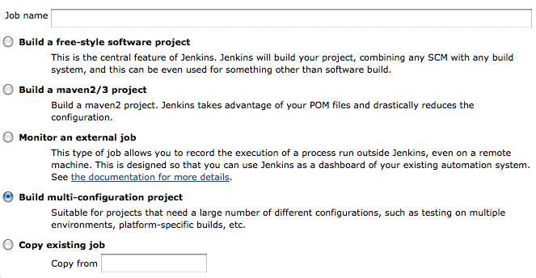

| Author: | Kumar McMillan |
|---|---|
| Venue: | PyCon 2011 |
| Slides: | http://farmdev.com/talks/tox/ |
pip install numpy
PYTHON 2
IS
DEPRECATED
Developing in tandem with tox: http://codespeak.net/tox/
$ virtualenv ~/tmp/fudge
$ source ~/tmp/fudge/bin/activate
(fudge)$ python setup.py develop
(fudge)$ pip install Nose
(fudge)$ nosetests
......................................................................................................................................................................................
----------------------------------------------------------------------
Ran 182 tests in 0.589s
OK
tox lets you develop in multiple versions of Python
$ cd fudge
$ tox -e py26,py32
[demo]
[tox]
envlist=py26,py32
[testenv]
deps=nose
commands=
nosetests []
[tox]
envlist=py26,py32
[testenv]
deps=nose
commands=
# tox -- --with-nicedots --stop
nosetests []
[tox]
envlist=py26,py32
[testenv]
deps=pytest
commands=
py.test []
python3
>>> import fudge
Traceback (most recent call last):
...
File "fudge/patcher.py", line 83
raise etype, val, tb
^
SyntaxError: invalid syntax
Python 2:
print u'Hello %s' % name
Python 3:
print('Hello {0}'.format(name))
kw = {}
if sys.version_info >= (3,):
kw['use_2to3'] = True
setup(name='YourModule',
version='0.1',
**kw)
$ python setup.py build
(requires distribute)
setup(
name='YourModule',
version='0.1',
classifiers=[
'Programming Language :: Python :: 3'
],
**kw
)
fudge/__init__.py fudge/tests/__init__.py
[testenv]
deps=nose
commands=nosetests []
[testenv:py32]
commands=
nosetests fudge.tests.all_tests
nose/__init__.py setup.py unit_tests/ functional_tests/
[testenv:py32]
commands=
{envpython} setup.py build_tests
cd build/tests
{envpython} runtests.py []
[testenv:docs]
changedir=docs
deps=sphinx
nose
commands=
make clean
make doctest
make html
[demo]
[testenv]
deps= django
commands=python manage.py test
[testenv:trunk]
basepython=python2.6
deps=
svn+http://code.djangoproject.com/svn/django/trunk/#egg=django
(interpreters must be installed and in $PATH)
LET'S
TEST
EVERYTHING
[demo]
Jenkins Matrix Build:
$TOXENV=py26
tox -e py26
# Python code for builder to execute:
url = "https://pytox.googlecode.com/hg/toxbootstrap.py"
d = dict(__file__='toxbootstrap.py')
exec urllib.urlopen(url).read() in d
d['cmdline'](['--recreate'])
[tox]
indexserver =
DEV = http://mypypi.org
[testenv]
deps =
docutils
:DEV:yourmodule
How to support Python 3:
tox: http://codespeak.net/tox/
Thank You